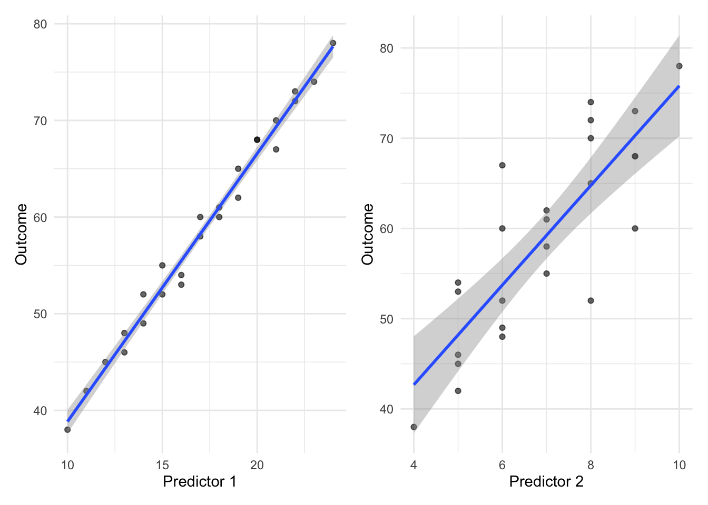
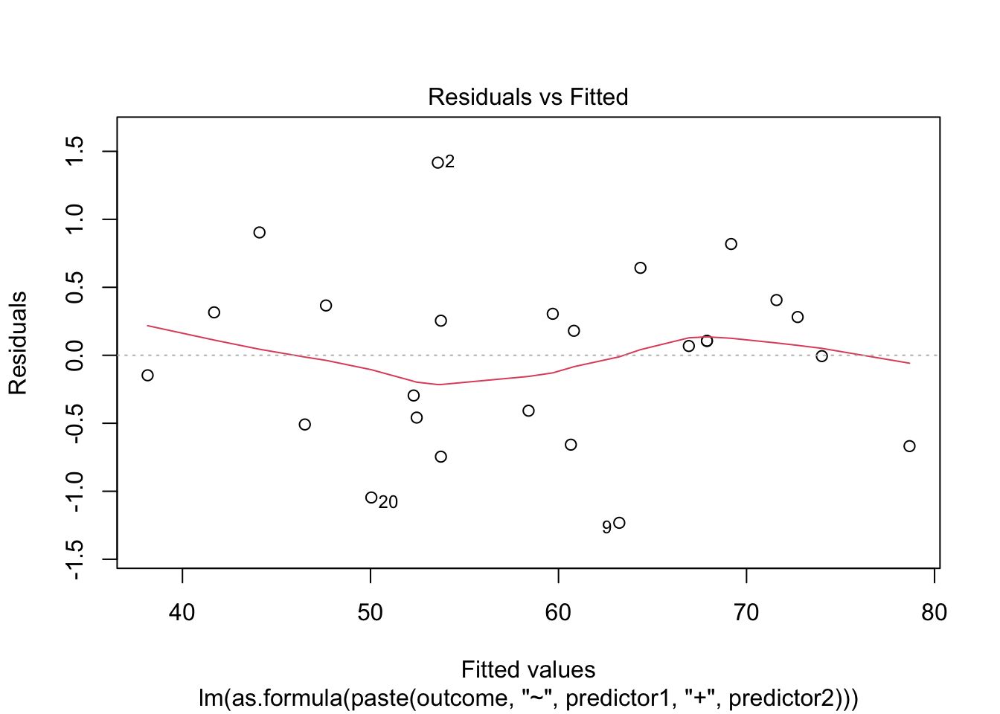
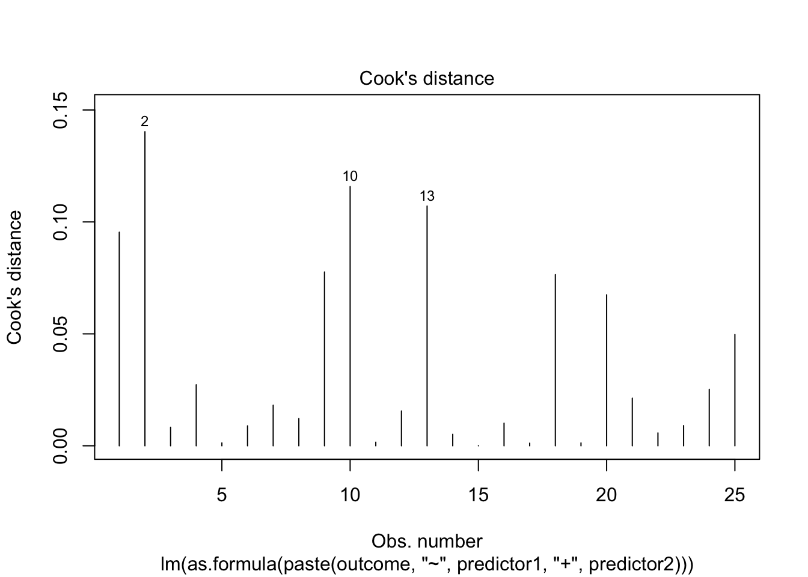

library(tidyverse)
library(effectsize)
library(car) # For VIFBoil in the Bag: Multiple Regression (2 Predictors)
Two predictors, one outcome
Overview
Use this template when: You want to predict a continuous outcome from two continuous (or categorical) predictors.
Example scenarios: - Predicting anxiety from social media use AND age - Predicting performance from motivation AND ability - Predicting wellbeing from sleep quality AND exercise
Step 1: Setup
Step 2: Load Your Data
# CHANGE THIS: Replace with your data file
data <- read_csv("data/multiple_regression_2pred_data.csv")
glimpse(data)Rows: 25
Columns: 6
$ id <dbl> 1, 2, 3, 4, 5, 6, 7, 8, 9, 10, 11, 12, 13, 14, 15, 16, 17, …
$ age <dbl> 21, 22, 20, 23, 21, 22, 20, 24, 21, 22, 23, 20, 21, 22, 20,…
$ gender <dbl> 1, 2, 1, 2, 1, 2, 1, 2, 1, 2, 1, 2, 1, 2, 1, 1, 2, 1, 2, 1,…
$ predictor1 <dbl> 12, 15, 18, 14, 20, 16, 22, 13, 19, 17, 21, 11, 24, 10, 23,…
$ predictor2 <dbl> 5, 7, 6, 8, 9, 5, 8, 6, 7, 9, 6, 5, 10, 4, 8, 6, 7, 5, 9, 6…
$ outcome <dbl> 45, 55, 60, 52, 68, 54, 72, 48, 62, 60, 67, 42, 78, 38, 74,…Step 3: Define Your Variables
# CHANGE THESE to your variable names
predictor1 <- "predictor1" # First IV
predictor2 <- "predictor2" # Second IV
outcome <- "outcome" # DVStep 4: Descriptive Statistics
# Summary statistics
data |>
select(all_of(c(predictor1, predictor2, outcome))) |>
summary() predictor1 predictor2 outcome
Min. :10.0 Min. : 4.00 Min. :38.0
1st Qu.:14.0 1st Qu.: 6.00 1st Qu.:52.0
Median :17.0 Median : 7.00 Median :60.0
Mean :17.2 Mean : 6.92 Mean :58.8
3rd Qu.:20.0 3rd Qu.: 8.00 3rd Qu.:68.0
Max. :24.0 Max. :10.00 Max. :78.0 # Means and SDs
data |>
summarise(
across(all_of(c(predictor1, predictor2, outcome)),
list(mean = ~mean(., na.rm = TRUE),
sd = ~sd(., na.rm = TRUE)))
) |>
pivot_longer(everything(),
names_to = c("variable", "stat"),
names_sep = "_") |>
pivot_wider(names_from = stat, values_from = value)# A tibble: 3 × 3
variable mean sd
<chr> <dbl> <dbl>
1 predictor1 17.2 3.89
2 predictor2 6.92 1.63
3 outcome 58.8 10.9 Correlation Matrix
# Correlation matrix
cor_matrix <- data |>
select(all_of(c(predictor1, predictor2, outcome))) |>
cor(use = "complete.obs")
print(round(cor_matrix, 3)) predictor1 predictor2 outcome
predictor1 1.000 0.764 0.992
predictor2 0.764 1.000 0.828
outcome 0.992 0.828 1.000Visualise Relationships
# Predictor 1 vs Outcome
p1 <- ggplot(data, aes(x = .data[[predictor1]], y = .data[[outcome]])) +
geom_point(alpha = 0.6) +
geom_smooth(method = "lm", se = TRUE) +
labs(x = "Predictor 1", y = "Outcome") +
theme_minimal()
# Predictor 2 vs Outcome
p2 <- ggplot(data, aes(x = .data[[predictor2]], y = .data[[outcome]])) +
geom_point(alpha = 0.6) +
geom_smooth(method = "lm", se = TRUE) +
labs(x = "Predictor 2", y = "Outcome") +
theme_minimal()
library(patchwork)
p1 + p2
Step 5: Run the Multiple Regression
model <- lm(as.formula(paste(outcome, "~", predictor1, "+", predictor2)),
data = data)
summary(model)
Call:
lm(formula = as.formula(paste(outcome, "~", predictor1, "+",
predictor2)), data = data)
Residuals:
Min 1Q Median 3Q Max
-1.2321 -0.4581 0.1059 0.3158 1.4170
Coefficients:
Estimate Std. Error t value Pr(>|t|)
(Intercept) 9.52489 0.62962 15.128 4.14e-13 ***
predictor1 2.41226 0.05304 45.480 < 2e-16 ***
predictor2 1.12489 0.12665 8.882 9.97e-09 ***
---
Signif. codes: 0 '***' 0.001 '**' 0.01 '*' 0.05 '.' 0.1 ' ' 1
Residual standard error: 0.6534 on 22 degrees of freedom
Multiple R-squared: 0.9967, Adjusted R-squared: 0.9964
F-statistic: 3315 on 2 and 22 DF, p-value: < 2.2e-16Step 6: Extract Key Statistics
model_summary <- summary(model)
# Model fit
r_squared <- model_summary$r.squared
adj_r_squared <- model_summary$adj.r.squared
# F-test
f_stat <- model_summary$fstatistic[1]
df1 <- model_summary$fstatistic[2]
df2 <- model_summary$fstatistic[3]
f_p <- pf(f_stat, df1, df2, lower.tail = FALSE)
cat("Model R² =", round(r_squared, 3), "\n")Model R² = 0.997 cat("Adjusted R² =", round(adj_r_squared, 3), "\n")Adjusted R² = 0.996 cat(sprintf("F(%d, %d) = %.2f, p = %.4f\n", df1, df2, f_stat, f_p))F(2, 22) = 3314.85, p = 0.0000Step 7: Check Assumptions
1. Linearity
plot(model, which = 1)
2. Normality of Residuals
plot(model, which = 2)
shapiro.test(residuals(model))
Shapiro-Wilk normality test
data: residuals(model)
W = 0.98384, p-value = 0.94923. Homoscedasticity
plot(model, which = 3)
4. Multicollinearity (VIF)
vif_values <- vif(model)
print(vif_values)predictor1 predictor2
2.398415 2.398415 cat("\nInterpretation:\n")
Interpretation:cat("VIF < 5: OK\n")VIF < 5: OKcat("VIF 5-10: Concerning\n")VIF 5-10: Concerningcat("VIF > 10: Serious multicollinearity\n")VIF > 10: Serious multicollinearity5. Influential Cases
plot(model, which = 4)
Step 8: Confidence Intervals
confint(model) 2.5 % 97.5 %
(Intercept) 8.2191332 10.830640
predictor1 2.3022631 2.522260
predictor2 0.8622283 1.387545Step 9: Standardised Coefficients (Beta Weights)
# Standardise all variables
data_z <- data |>
mutate(across(all_of(c(predictor1, predictor2, outcome)), scale))
model_std <- lm(as.formula(paste(outcome, "~", predictor1, "+", predictor2)),
data = data_z)
cat("Standardised coefficients (β):\n")Standardised coefficients (β):coef(model_std) (Intercept) predictor1 predictor2
-7.372839e-17 8.636065e-01 1.686537e-01 Step 10: Effect Sizes
# Overall f²
f_squared <- r_squared / (1 - r_squared)
cat("Overall model:\n")Overall model:cat(" R² =", round(r_squared, 3), "\n") R² = 0.997 cat(" f² =", round(f_squared, 3), "\n") f² = 301.35 # Unique contribution of each predictor (semi-partial correlations)
# Can calculate by comparing R² of full model vs model without each predictor
model_without_p1 <- lm(as.formula(paste(outcome, "~", predictor2)), data = data)
model_without_p2 <- lm(as.formula(paste(outcome, "~", predictor1)), data = data)
delta_r2_p1 <- r_squared - summary(model_without_p1)$r.squared
delta_r2_p2 <- r_squared - summary(model_without_p2)$r.squared
cat("\nUnique variance explained:\n")
Unique variance explained:cat(sprintf(" %s: ΔR² = %.3f\n", predictor1, delta_r2_p1)) predictor1: ΔR² = 0.311cat(sprintf(" %s: ΔR² = %.3f\n", predictor2, delta_r2_p2)) predictor2: ΔR² = 0.012Step 11: Summary of Results
coef_table <- coef(summary(model))
cat("=== MULTIPLE REGRESSION RESULTS (2 PREDICTORS) ===\n\n")=== MULTIPLE REGRESSION RESULTS (2 PREDICTORS) ===cat("MODEL FIT:\n")MODEL FIT:cat(sprintf(" R² = %.3f, Adjusted R² = %.3f\n", r_squared, adj_r_squared)) R² = 0.997, Adjusted R² = 0.996cat(sprintf(" F(%d, %d) = %.2f, p = %.4f\n\n", df1, df2, f_stat, f_p)) F(2, 22) = 3314.85, p = 0.0000cat("COEFFICIENTS:\n")COEFFICIENTS:cat(sprintf(" Intercept: b = %.3f, SE = %.3f\n",
coef_table[1, 1], coef_table[1, 2])) Intercept: b = 9.525, SE = 0.630cat(sprintf(" %s: b = %.3f, SE = %.3f, t = %.2f, p = %.4f\n",
predictor1, coef_table[2, 1], coef_table[2, 2],
coef_table[2, 3], coef_table[2, 4])) predictor1: b = 2.412, SE = 0.053, t = 45.48, p = 0.0000cat(sprintf(" %s: b = %.3f, SE = %.3f, t = %.2f, p = %.4f\n",
predictor2, coef_table[3, 1], coef_table[3, 2],
coef_table[3, 3], coef_table[3, 4])) predictor2: b = 1.125, SE = 0.127, t = 8.88, p = 0.0000cat("\nVIF values:", round(vif_values, 2), "\n")
VIF values: 2.4 2.4 Step 12: APA Write-Up Template
NoteAPA Format
A multiple regression was conducted to predict [OUTCOME] from [PREDICTOR 1] and [PREDICTOR 2]. The overall model was [significant/non-significant], F(2, XX) = XX.XX, p = .XXX, explaining XX.X% of the variance in [OUTCOME] (R² = .XX, adjusted R² = .XX).
[PREDICTOR 1] was a [significant/non-significant] predictor, b = X.XX, SE = X.XX, t(XX) = X.XX, p = .XXX, β = X.XX.
[PREDICTOR 2] was a [significant/non-significant] predictor, b = X.XX, SE = X.XX, t(XX) = X.XX, p = .XXX, β = X.XX.
Multicollinearity was not a concern (VIF = X.XX and X.XX for [PREDICTOR 1] and [PREDICTOR 2], respectively).